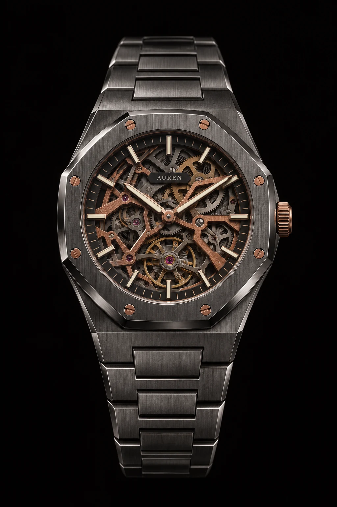
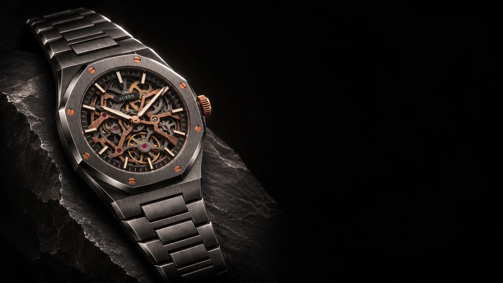

AUREN · COLEÇÃO ORIGEM
O tempo,
por dentro.
Há uma beleza que só se revela
quando você olha de perto.
A MAISON
Rolex
Submariner.
Preto, aço e uma luneta graduada. Um estudo de forma inspirado no universo dos relógios de mergulho.
Gire o modelo com o mouse e acompanhe a separação das camadas durante a rolagem.
Explorar os detalhesA COLEÇÃO
Rolex
Cosmograph Daytona.
Três contadores e uma luneta com escala taquimétrica. Uma interpretação 3D do desenho do cronógrafo.
- Estudo
- Cosmograph Daytona
- Mostrador
- Claro com três contadores
- Interação
- Rotação e desmontagem em 3D
Interpretação visual independente do Rolex Daytona.
O SAVOIR-FAIRE
Rolex
Datejust.
Uma arquitetura à vista
A luneta canelada e o mostrador verde definem este estudo. A rotação revela os volumes e os reflexos do conjunto.
O contraste dos materiais
Superfícies em grafite, arestas luminosas e pontos de cobre. Uma combinação de tons que muda conforme a incidência da luz.
A continuidade da forma
A pulseira integrada prolonga as linhas da caixa. Os elos articulados repetem o contraste entre planos escovados e contornos polidos.

ATENDIMENTO PRIVADO
Algumas escolhas
merecem uma conversa.
Descubra os detalhes da coleção em uma apresentação pessoal.
Experiência demonstrativa de uma marca fictícia.